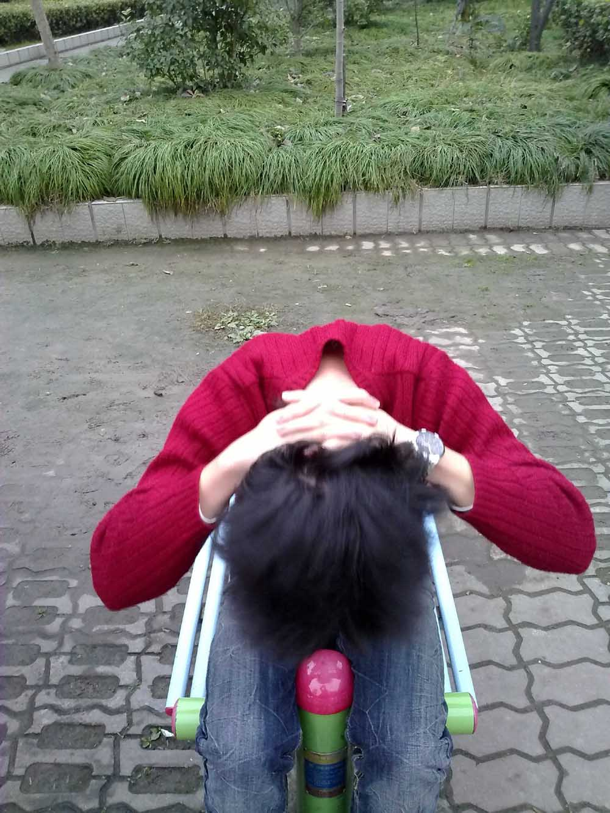

[转寄/推荐][转贴][删除][修改][设置可RE属性][上一篇][返回讨论区][下一篇][回文章][同主题列表][同主题阅读][从这里展开]
发信人: OutdoorAssoc (交大野协官方ID), 信区: outdoor
标 题: 野外生存协会“Running Shanghai”城市定向大赛圆满
发信站: 饮水思源 (2009年12月18日00:03:19 星期五)
微微的风，带着暖暖的惬意，担心了一个星期的小雨，终究没有落下来。
百年纪念碑旁的草坪，我们驻扎的营地，一下午，欢声笑语。看着大家席地而坐，吃着各
自胜利的归属品——小果篮，谈笑风生，有一种莫名的满足感，也许这就是给幕后组织者
最大的回报吧~大家的快乐，就是我们的快乐。感谢大家，给我们带来了一个不一样的周末
。
12月12日，星期六，野外生存协会~“Running Shanghai”城市定向大赛，圆满结束
本次比赛最终确定34支参赛队伍，全部出席。从本科大一新生，到研究生，到博士生，甚
至还有一些已经毕业了的校友们。无论从参赛队伍的来源、人数，还是从路线涵盖的范围
、奖品含金量，都是协会历年之最，最终决出一二三等奖共七支队伍。
一等奖：一支队伍 睡袋
二等奖：二支队伍 腰包
三等奖：四支队伍 头灯
其中一等奖获得队伍：编号13——李阳 万梦龙 戴鑫彤 苏素
在这里再次恭喜以上七支获奖的队伍，希望我们的奖品能在您野外游玩时，助上你一臂之
力。同时也希望我们所有的参赛队员们，在这里度过了一个温馨而愉快的下午。小小的奢
求~在你某一个记忆的角落里，储存着这样一个奇妙的日子，我们共同追逐，共同疯狂，我
们为了完成一个任务点而共同欣喜，我们为了打捞会员卡~~而奋不顾身~~我们不抛弃，不
放弃，直到到达终点。希望若干年后，当你再回首时，当你想起2009年的12月12日，城市
定向，那些快乐的瞬间，依然让你笑容满面。
活动结束三四天了，大家那天都累了吧，都休息好了吗？
活动中也许有很多不足，希望大家能够见谅，大家如果有什么好的意见，我们热烈欢迎。
不过还是希望大家能忘掉我们的各种小小的瑕疵，记住这个冬天，记住这个下午，希望留
在大家心底的更多的是比赛过程中的乐趣，体育的魅力，大自然的美好。希望大家能一如
既往的关注野协，支持野协。
野协的孩子们休息的怎么样了？这次真的是辛苦大家了。在此特别感谢财务部部长许孟潭
（还有那个被打到没电、依然坚挺的小手机）和她的小干事们，活动任务繁重，而人员有
限，真是辛苦大家了。还要着重感谢李雨璇、金永青小朋友为比赛辛苦拉来的赞助（这也
是野协史上第一桶金！），使我们的策划有了牢固的资金后盾。感谢王姝玥同学整整一周
细致的报名统计，分组，传达消息，解答参赛人员的困惑，经常半夜被震醒，辛苦啦。还
要感谢金永青、徐梦超周密的路线设计，感谢大家精细的踩点、布点、发队、统计分数。
还要感谢荣任远、高翔宇辛苦的背包、蹲点、蹲点的任务真的很辛苦忙碌，辛苦大家啦。
感谢林隽、郭岑设计比赛规则、比赛任务。还要感谢当天来帮忙的HYP、财哥、焦博文、王
增烨、EMZ和一直在幕后给予支持的严皓、3丰、会长大人，当然还有帮忙踩点的黄奕阳和
李观群。感谢大家舍弃周六休息时间，大家辛苦啦。
关于城市定向，我们迈出了交大的第一步。
正如准备会上所说的，野协对于此次比赛的期待丝毫不亚于参赛者们，我们还要做更大更
好的城市定向，我们要做上海高校联盟杯城市定向比赛——将有来自不同学校上百支队伍
参赛，在不同地点出发，奔向同一终点。
这不是空谈！不是想象！！
野协是实现梦想的地方
期待野协明天会更好~~
执笔
郭岑 XMT
 screen.width - 200){this.width = screen.width - 200}">
|

[转寄/推荐][转贴][删除][修改][设置可RE属性][上一篇][返回讨论区][下一篇][回文章][同主题列表][同主题阅读][从这里展开]